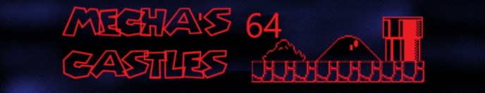
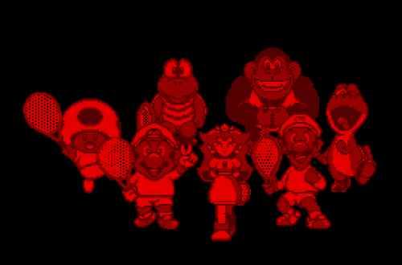

Site's original intro banner until May 2022
Here is where snippets from the site that are worth being preserved will be archived, along with anything else I deem of value.
Unused snippets, previously shared on tumblr here!
Archive of my author commentary, circa late 2017. This is therefore not my current perspective necessarily, but it provides insight on where I was then and why sequels like New Frenemy Adventure turn out how they do.
Notes (WIP, details later edits to chapters and collects other info) here (Google Doc).
Tropes (WIP) Here.
Supplementary material (WIP) part 1 (Character bios), and part 2 (other commentary, locations, unused material commentary). Part 3: Collection of unused material here.
Old versions of: No Courage, Nerves, or Pronouns (7), Property of Bowser (11), Arcane Gang Symbol (12), Brutality and Complexity (13), Rambo Mario (14), The Missing Piece (15), A Modest Proposal (16), The New Mario and Bowser (17), Epilogue: The Friend.
Fun fact: I found older versions of the chapters. Like the above list, I do think these were uploaded to FF.net at one point. (The only place FF2 was ever hosted, unlike the rest). If you are curious click here for a folder.
Hi again, it’s about time I explain what’s happening with The Mario Clash as a musical project. I’ve planned two EPs, “H.A.A.E. ii v.2” and “A Whole New Level”. The process however was.. not so smooth. Now I’m just gonna release the demos so far. Tracks that are my experiments from using new recording techniques and software. If you are unfamiliar, my old recording method was with Garageband on iOS. With no microphone I would use the tablet’s built in mic to record my live amps. Other effects including the drums would come from Garageband and nothing else. That’s some legitimately powerful and useful software but there were issues regardless and I wanted to produce better sounding live music- not necessarily studio recording level but free from the ordeals I dealt with in ‘BooTracker 3000’ (2016), Hand And Arm Exhaustion’ (2018) and very recently ‘Hand And Arm Exhaustion 2’ (2021).
Now to the present time, I bought a Steinberg interface, Reaper for the PC, and a Shure SM57. Problem solved? In ways yes and no, bringing me to the current project. I wanted to rerecord some tracks from HAAE 2 that I just couldn’t get clean or tight enough along with a new ‘A Whole New Level’ EP that would have a new theme and style of song writing.
The bad: I’m still learning the secrets of good production. No obstacle here but to practice and learn more. Also the drums frankly suck. On Garageband I was often playing the drums myself and that software has some good sounding drum samples. This certainly had it’s own issues considering I’m not really a drummer and did it all on a touch screen, but it had advantages of a better sound with no clipping and the freedom to change the feel and tempo on the spot. Now I’m using a free program called Hydrogen drum machine to create the drum tracks and then importing them into Reaper where I record the rest of the instruments. Hydrogen however has some awful stock sounds and not even that many packs to add and improve it. It also takes forever to do program certain things that aren’t strictly on grid. That may not be the programs fault but it is something I miss from Garageband where I was manually controlling the tempo. (Remember, I never quantize- ever!) Reaper has a plethora of VSTs to use but of course some of the exact ones I was fond of in Garageband aren’t there, and substitutions are necessitated. Again not really its fault. The last issue is so small but one that irritates me most. I can’t easily add album artwork like Garageband did. Windows is supposed to have several ways to do so without third-party software but none of them work!
The good: Better recording quality, period. This goes for instruments, vocals, whatever. I can now double track and mix without slowing down my system. (Previously I could only really pan the guitar one side and bass another. Trust me, anything else was too heavy for the iPad and/or turned into mud) I have much better live amps and equipment to work with too.
Well, that sure seems like more bad than good does it? Actually a lot of that bad can be negated by me becoming more experienced with my new tools and finding alternatives, especially regarding drums. Because of that however I’m not ready to seriously release anything just yet. So now I present what I got so far via Google drive. But there is a little more to this still. For more details track by track, see the release way below under ‘H.A.A.E ii v.2/ A Whole New Level (Demo)’
TL;DR: I’m came pretty far with new equipment but still need time to work out the kinks and produce tracks to my new standard of quality.
Link to demo. Here!